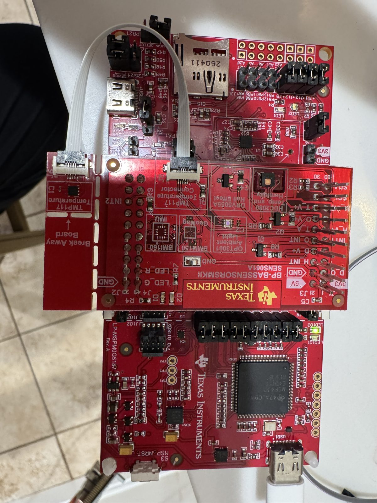
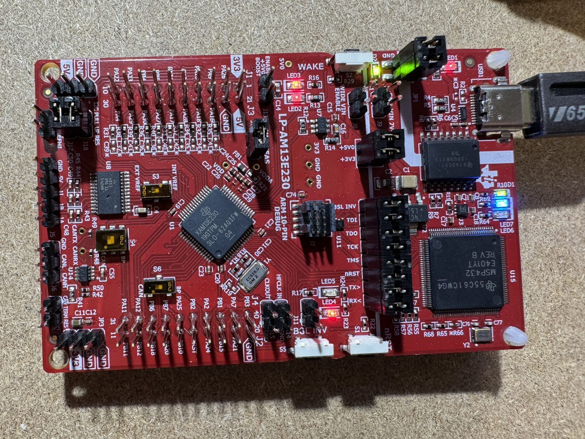
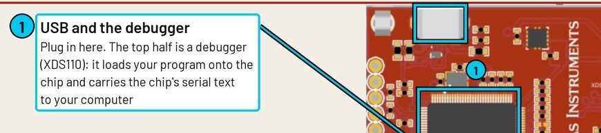
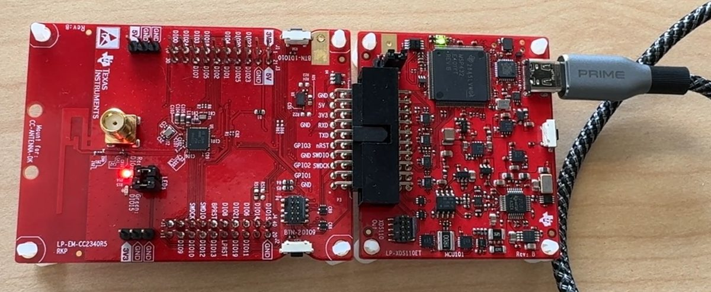

Fox Red Labs / Software / Portability, proven
Which code moves between TI chip families?
Portable here means one application file that never changes, plus one small glue file per chip family (35 to 66 lines). Moving inside a family costs a pin setup file only. If you know Arduino: the app is your sketch and the glue is the board core.
Proven by running: 66 tests of moving code between MSP430, MSPM0, MSPM33, the CC23xx and CC27xx radios, CC35xx Wi-Fi, AM13, AM26x, C2000, radar and Linux. 27 Work, 52 of 66 ran on silicon and 35 had their behavior checked.
Inside a family, often. Of 361 MSPM0 examples moved to a smaller MSPM0, 153 built and all 133 that were safe to run ran. Every driver example the CC23xx and CC27xx boards both ship (33 of 33) builds for either from the same source. Across families, in part, with a short header. MSPM0 examples ran on the Bluetooth CC2340R5 (5 of 10), the new MSPM33 (40) and the AM13 motor chip (14). TI's own C ran unchanged up to a Linux processor. MSP430 examples were rewritten for an MSPM0 and ran, and the post-quantum code written for the CC1354P10 passes its known-answer tests on the MSPM33, two MSPM0 parts and the CC2755P10. A C2000 current loop runs on the AM13 and AM26x from the same file. Each card names what stops the rest.
Terms: vocab (SysConfig, DriverLib, TI Drivers, glue, shim, HAL). Retargeted means the same example rebuilt for another chip, usually by changing the device in SysConfig. A SysConfig translation rewrites the setup file for a chip with different drivers. Tested on one Intel Mac, macOS 15.7, with CCStudio 21.0.1 (TI Arm Clang 5.1.1), SysConfig 1.26.3, MSPM0 SDK 2.11.00.07, F3 SDK 9.21.00.36 and Zephyr 4.4.2 unless a card says otherwise. Questions: FAQ.
What works with what
Which tools, operating systems and maker platforms work with which TI family. Each word links to its source or the run behind it.
57tool and family combinations that Work: they ran on these boardsWorks
11named in TI release notes as tested; not repeated hereVendor tested
11Should work or Could work: built, or ran in part; the cell names the blockerShould or Could work
Counts are cells in the matrix below, not distinct products. A blank cell has nothing recorded; it does not mean the tool cannot work.
Tools by TI family
Compilers, build systems, operating systems, maker platforms and smart home. Tap a cell for its note, what changed and the files, or choose one family to read every note.
Open a cell's note for detail. The status link opens its source.
How to read every matrix state
- Works it ran here and did what it should
- Should work it built here; the note names what is in the way of a run
- Could work it ran up to a step; the note names the blocker
- Vendor tested the SDK's release notes name this tool and version as tested; cited, not repeated here
- Community a third-party port exists
| MSPM0 | MSPM33 | CC23xx, CC27xx, CC13xx | CC35xx Wi-Fi | AM13 | AM26x | AM24x | C2000 | mmWave radar | TDA4 Linux | AM62L | AM67A | |
|---|---|---|---|---|---|---|---|---|---|---|---|---|
| Compilers | ||||||||||||
| TI's own compilerTI Arm Clang; C2000 CGT on C2000 | WorksRead note262 of 270 G3507 examples built (222 with one make each); 213 flashed, 203 ran, none crashed | WorksRead noteBlink to benchmarks | WorksRead noteEvery board | WorksRead noteBlink, Matter, Wi-Fi | WorksRead note100 built, 80 run | WorksRead noteCoreMark, FOC step | WorksRead noteTI Arm Clang 4.0.4.LTS: 163 of 194 SDK examples built, 82 of 121 first-core projects printed a pass; CoreMark 2,931 per core | WorksRead noteC2000 CGT 25.11 | WorksRead note2 of 23 driver examples ran (UART echo, GPIO) | |||
| GCCTI names Arm GNU; the build used the Zephyr SDK's GCC 12.2 | WorksRead noteDriverLib, no RTOS: 224 of 224 built, 87 of 87 ran on the L1306 | Vendor testedRead noteArm GNU 9-2019-q4; 176 of 259 examples | WorksRead noteZephyr's GCC ran on the CC2340R5; 144 of 144 TI driver examples build; Bluetooth and Zigbee stacks ship no GCC libraries | Vendor testedRead noteGCC 12.3.Rel1; 64 of 64 examples | Vendor testedRead noteGCC 15.2.rel1, CMake command line | WorksRead noteZephyr SDK's GCC 14.3 built and ran hello_world and blinky on the first R5F core | WorksRead noteTI's MSPM0 FFT example ran on the A72 | |||||
| IAR Embedded WorkbenchEWARM 9.70 | Vendor testedRead noteIAR 9.70.2; 1,357 of 1.9k examples | Vendor testedRead noteIAR 9.70.4 plus TI's device patch; 166 of 259 | Vendor testedRead noteIAR 9.70.2; 554 of 643 F3 examples | Vendor testedRead noteIAR 9.70.1, Windows only; 165 of 193 | ||||||||
| Keil MDKArm Compiler 6 | Vendor testedRead noteuVision 5.38, Arm Clang 6.16+; 1,307 of 1,911 | Vendor testedRead noteuVision 5.38, Arm Clang 6.16+; 157 of 259 | Vendor testedRead noteuVision 5; 1 example | |||||||||
| Ways to build and flash | ||||||||||||
| Terminal, no IDEmake or a script | WorksRead note262 of 270 G3507 examples | WorksRead note19 s to a changed blink | WorksRead note41 s to a changed blink | WorksRead note60 s edit to blink | WorksRead note22 s to a changed blink | WorksRead noteBuild 5.9 s, RAM load | WorksRead noteSDK makefiles and a RAM load from the terminal; blink 31 s, 15 examples built by prebuild.sh | WorksRead noteBlink by script, 4.6 s | WorksRead noteBuilt and flashed from the Mac | WorksRead noteNative gcc on the board | WorksRead noteNative gcc 13.3 on the board built the portable app in 2.3 s | |
| The frl tool./start.sh: back up, build, flash, check the LED through the debugger | WorksRead noteL1306: 13 to 14 s, pattern checked on the pin | WorksRead noteM33: 26 s, pattern checked on the pin, restore matched (2026-11-08) | WorksRead noteAM13: 26 s, pattern checked on the pin, restore matched (2026-11-08) | WorksRead noteF2800137: 61 s, pattern checked on the pin, restore matched (2026-11-08) | ||||||||
| Renode (simulate before silicon)open-source machine simulator; platform from the Zephyr build's device tree with dts2repl | WorksRead noteBare-EL3 Zephyr hello world booted and printed on UART0 in Renode 1.17.0 before the board arrived; 6 translation tables were too few, 8 work | |||||||||||
| Operating systems | ||||||||||||
| FreeRTOS | WorksRead note11 tasks in 4 kB on the L1306 | WorksRead note397 tasks with the heap raised to about 248 kB | WorksRead noteTI's FreeRTOS: task switch 3.5 µs and 238 tasks on the CC2755P10, 7.4 µs on the CC1354P10, 10.6 µs on the CC2340R5 | WorksRead noteTI's FreeRTOS blink, and CoreMark in a FreeRTOS thread at 160 MHz | WorksRead noteTask switch 1.49 µs at 200 MHz | WorksRead noteTI's FreeRTOS example: semaphore task switch 6.06 µs at 400 MHz | WorksRead noteTI's FreeRTOS IPC example ran: 3.19 us round trip with four partner cores | Vendor testedRead noteThe SDK guide lists FreeRTOS 10.4.3 among its tools; no RTOS run on it | ||||
| Zephyrupstream or TI's tree | WorksRead noteG3507 ran; 88 of 93 upstream samples build on G3507, G3519, L2228; L1306 on an out-of-tree board file; BoosterPack screen, Sharp128 and Audio shields build on main for G3507 and G3519 (4.4.2 has no MSPM0 SPI driver); I2C (open pull request #117311) and internal flash (a new driver) ran on the G3519: loopback 12 of 12, touch chip read at 0x38, flash 18 of 18 Changed: Two patches on upstream: the open I2C pull request #117311 and an internal-flash driver Get the files | WorksRead noteZephyr main plus two open TI pull requests (UART and clock, GPIO): MicroPython's Zephyr port boots and runs on the MSPM33C321A (25 Oct 2026). hello_world builds on main alone; blinky does not (no led0) | WorksRead noteCC2340R5 blink and benchmark; 24 of 26 upstream samples build; CC2755P10 hello_world printed its greeting and blinky toggled the green LED in TI's fork v3.7.0-ti-1.00.01_ga (flashed 2026-10-17) | Could workRead noteTI's fork (v3.7.0-ti-1.00.01_ga): hello_world and blinky link (65 kB flash); the signed-image step fails on Toolbox 4.3.23 | Could workRead noteUpstream main: hello_world builds, an LED image ran; Zephyr's blinky does not build (no GPIO driver) | WorksRead noteAn out-of-tree board: hello_world boots and prints on R5FSS0-0 beside TI's FreeRTOS; upstream has none | WorksRead noteUpstream lp_am243/am2434/r5f0_0 hello_world and blinky run from RAM; the M4 blinky does not build | |||||
| Linux | WorksRead noteBoots in 24 s; models on the C7x | WorksRead noteTI SDK 12.01 (Arago, kernel 6.18) with Docker 29.3, Python 3.14, Node 22 | WorksRead noteBeagleBoard Edge AI 11.00.00.08 (Arago, kernel 6.12.33): models on the C7x, hardware video codec, Docker | |||||||||
| Maker platforms | ||||||||||||
| ESPHomeESPHome platforms for the CC23xx, CC27xx and CC35xx | WorksRead noteCC2340R5 and CC2755P10 in Home Assistant | Could workRead noteWi-Fi and native API answer; Home Assistant could not reach the board on the test network | ||||||||||
| Arduino | WorksRead noteA 649-line layer; Arduino_GFX ran. G3519 also runs Blink, AnalogReadSerial, Wire (touch controller at 0x38, 100 of 100 reads), SPI (256 of 256 loopback), analogWrite and attachInterrupt through the Zephyr-based core on Zephyr main plus the MSPM0 I2C pull request Changed: One devicetree overlay per board (about 40 to 70 lines), 0 sketch edits; the G3507 screen demo uses a 649-line layer instead Get the files | WorksRead noteCC2340R5: Blink, AnalogReadSerial, attachInterrupt, analogWrite, SPI and Wire run through the Zephyr-based core (27.7 to 38.3 kB flash, 6.1 kB RAM); Wire reads the OPT3001 (1594 lux); a Wire address scan finds nothing on the CC23x0 I2C driver, so probe with a register read Changed: One devicetree overlay (about 40 to 70 lines), 0 sketch edits Get the files | ||||||||||
| PlatformIO | CommunityRead noteOne third-party platform | |||||||||||
| MicroPython | Could workRead noteA new port (no upstream one): full build boots on the G3519 with a REPL at 115200 baud (175.6 kB flash, 122 kB heap); minimal build built for the G3507, not flashed. Zephyr's port does not fit Changed: A new MSPM0 port (console, time, pins, clock, SPI); MicroPython files unmodified | WorksRead noteMicroPython's own prj.conf on Zephyr main plus two open TI pull requests (UART and clock, GPIO): REPL, Pin, float and SPI run; 292.3 kB flash, 83.6 kB RAM, 48 kB heap; I2C reads hang; no Zephyr ADC or PWM driver for this chip Changed: No port code: one watchdog-off conf and overlays; needs the pinned Zephyr tree Get the files | WorksRead noteCC2340R5: upstream MicroPython's Zephyr port runs with a REPL, Pin, ADC, Pin.irq (10 of 10), PWM (duty_ns; duty_u16 needs a one-cast patch), SPI and I2C (OPT3001 read, 1596 lux; I2C.scan() returns [] on the CC23x0 driver) in 174.8 kB flash, 29.9 kB RAM Changed: One config file and one devicetree overlay, 0 MicroPython or Zephyr edits Get the files | |||||||||
| Rust (embassy) | CommunityRead noteembassy-mspm0, git only | CommunityRead notePeripheral crate for the CC13x4 only (CC1354P10, ti-lprf-pacs); none for CC23xx or CC27xx | ||||||||||
| MSP430 projectsTI MSP430FR examples ported by hand | WorksRead noteThree MSP430FR2433 FRAM examples ran on the L1306: a counter that survives resets and power-off, a watchdog wake from deep sleep, a UART echo from deep sleep | Should workRead noteThree examples build; the deep-sleep test locked the debugger out (cause not confirmed; the image's only wake source was the watchdog, which the SDK does not list for STANDBY), so none is checked | ||||||||||
| Code from other ecosystems | ||||||||||||
| Raspberry Pi Pico SDKpico-examples | WorksRead noteMSPM0 G3519: blink, serial hello, I2C bus scan, PWM fade and ADC read run with their .c files unchanged, 1.8 to 10.6 kB of flash Changed: 316-line layer over DriverLib plus an 81-line board folder, 0 app edits Get the files | |||||||||||
| Renesas FSP examplesra-fsp-examples | WorksRead noteMSPM0 G3519: sci_uart, adc and gpt run unchanged and iic_master with five constants changed (4 of 5); the timer-triggered ADC example converts on time but its DMA half does not finish Changed: 577-line FSP layer over DriverLib plus a 189-line board folder, 0 app edits in three examples Get the files | |||||||||||
| Nordic BLE appsLED Button and UART services | Could workRead noteCC2340R5: a Mac finds the board by either Nordic service; LED write 24.3 ms median, UART echo 60 of 60 lines Changed: Two 8-line service files through tools/gatt_gen and one app file on TI's basic_ble; no Nordic code Get the files | |||||||||||
| Wi-Fi provisioning over BLEphone sends the network name | WorksRead noteCC35X1: TI's provisioning example joined from a Mac script in 7.13 s, 2 runs; the version that adds MQTT and saved credentials boots and advertises Changed: No port code: TI's provisioning service unmodified; a Python script stands in for the phone app Get the files | |||||||||||
| Smart home | ||||||||||||
| Home Assistant | WorksRead noteMSPM0 G5187 with a CC1407P radio: mailbox, doorbell and panic events seen in Home Assistant | Could workRead noteZigbee light: 95 ms on 2026-10-05; the 2026-10-16 repeat did not join | Could workRead noteMQTT example answers a Mac; not in Home Assistant | Could workRead noteBridge passed its self test and a replay; Home Assistant answered a ping; live run not finished | WorksRead noteContainer 2026.10.4 ran; an MQTT sensor appeared (557 MiB, 67.7 s to first answer) | WorksRead noteContainer started on the Arm cores; first HTTP answer at 52.7 s, 531 MB | ||||||
| Matter | Could workRead noteThread smoke alarm boots and reports; pairing not done | Could workRead noteThermostat pairs into Apple Home only, with a test ID that is not certified; TI's light paired in 63 s | ||||||||||
| Thread | WorksRead noteApple TV network, 0.44% loss | |||||||||||
The map
Code from the row's family moved to the column's family. The map assumes the target chip has the hardware: an AES example does not move to a chip with no AES block, and is not counted against the move. Click a cell for its record below.
| From \ to | MSP430 | MSPM0 | MSPM33 | CC23xx, CC27xx, CC13xx | CC35xx | AM13 | AM26x | mmWave radar | TDA4 Linux | C2000 |
|---|---|---|---|---|---|---|---|---|---|---|
| MSP430 | ✓same SDK | WorksDriverLib: rewritten | WorksDriverLib | Could workDriverLib | WorksDriverLib | |||||
| MSPM0 | ✓same SDK | WorksDriverLib | WorksTI Drivers: header | WorksDriverLib: config | WorksPlain C: build files | WorksPlain C: as is | WorksPlain C: small edits | |||
| MSPM33 | WorksDriverLib | ✓same SDK | ||||||||
| CC23xx, CC27xx, CC13xx | WorksTI Drivers: header | WorksPlain C: board file | ✓same SDK | WorksTI Drivers: as is | ||||||
| CC35xx | WorksTI Drivers: as is | ✓same SDK | ||||||||
| AM13 | ✓same SDK | WorksPlain C: as is | ||||||||
| AM26x | ✓same SDK | WorksMCU+ drivers: header | ||||||||
| mmWave radar | Should workMCU+ drivers | ✓same SDK | ||||||||
| TDA4 Linux | ✓same SDK | |||||||||
| C2000 | WorksPlain C: as is | WorksPlain C: as is | ✓same SDK |
Works: TI examples moved to that family ran on its board. Under it, the layer that ran and what the move needs: as is (rebuilt unchanged), config (new device and pins in SysConfig), header (one mapping header from this repository, app unchanged), board file (timer, pins and console for the new board), small edits (a few app lines). Should work: it built for the target; the same API is on both sides and the card names the glue in the way. Could work: it needs real porting effort; the card names the blocker.
Every test
Each card is one test: code from one chip built, and where possible run, on another. It shows how far up the ladder it got and what is in the way. Red means the API already matches and only naming, packaging or build glue is in the way. Ports of other ecosystems (ESPHome, Arduino, other vendors' examples) are on Start with your code. From the data (CSV), updated 2026-11-08.
- Works built and ran on the target 27
- Should work same API, only glue in the way 20
- Could work real porting effort 16
- Does not exist no layer to port to 2
- Does not make sense hardware is missing 1
Plain C
15 tests: 11 works, 3 could work, 1 should work
Room-occupancy model archives built for the G3507, plus CoreMark, Embench, micro-ecc, jsmn
3 unchanged of 4
- inspected
- built
- ran
- behavior verified
What is in the wayRAM only: the 30k model's buffers exceed 4 kB, 6 of 19 Embench benchmarks do not fit. Prebuilt archives ran unchanged: 20 of 20 vectors on the 500, 2k and 8k models, cycles within 6% of the G3507
TI's cmsis_dsp_fft_q15 example (MSPM0 SDK) in the MCU+ SDK empty project for the R5F, app unchanged, one-line shim for the init call
1 with glue of 1
- inspected
- built
- ran
- behavior verified
What is in the wayRan 2026-10-11 on the AM263P Cortex_R5_0 (RAM load in one CCStudio scripting run): peak bin 5 as the example expects, value 4023, input transformed in place. The CMSIS-DSP sources had to be compiled directly because TI's prebuilt R5F CMSIS library defines the FFT symbols twice and does not link. A fresh DSLite connection reads RAM as zero on this board, so the check needs one run (dss_run_read.py)
TI's cmsis_dsp_fft_q15 example (MSPM0 SDK) built with the SK-TDA4VM's own gcc on its Linux (Cortex-A72, aarch64), app unchanged, a 14-line CMSIS-core stand-in and an 11-line host harness
1 with glue of 1
- inspected
- built
- ran
- behavior verified
What is in the wayRan 2026-10-11: gFFTmaxFreqIndex=5 gFFTmaxValue=4023 PASS, the same as the AM263P R5F (X32) and an x86_64 Mac. Sources went over the serial console (no network on the board that day), md5 checked. Nothing TI ships for the TDA4 covers an MCU example: this is the Plain C layer and nothing else reaches the A72
The IWRL6432 radar frame parser written for the AM13E230 (am13e230/radar-parser) built with the SK-TDA4VM's gcc on its Linux A72 and run on a recorded 60 s radar capture
1 unchanged of 1
- inspected
- built
- ran
- behavior verified
What is in the way2026-10-11: 231 frames parsed, every line identical to the Mac reference parser and to this Mac's build of the same C (cmp). Parser unchanged; a 20-line host main. Sources over the serial console. The radar's own firmware (M4F plus HWA) has no landing on the A72; its output does
ML-KEM-768 and ML-DSA-44 (mlkem-native and mldsa-native) with NIST known-answer tests, the portable code first run on the CC1354P10-1, board harness only
6 unchanged of 6
- inspected
- built
- ran
- behavior verified
What is in the wayAll 6 steps pass at 160 MHz: ML-KEM-768 key pair, encapsulate and decapsulate in 8.1, 9.2 and 11.3 ms; ML-DSA-44 key pair 19 ms, verify 19 ms, sign 39 ms. The board glue (cycle counter, stack painting) is new. Cycle counts are 30 percent above the CC1354P10's with the same compiler (2 flash wait states here, none there). ML-DSA signing needs 51 kB of stack. No TRNG or serial exchange with a Mac was run here
ML-KEM-768 and ML-DSA-44 (mlkem-native and mldsa-native) with NIST known-answer tests, the portable code first run on the CC1354P10-1, board harness only; the Cortex-M0+ has no cycle counter, so SysTick counts
6 unchanged of 6
- inspected
- built
- ran
- behavior verified
What is in the wayAll 6 steps pass at 80 MHz: ML-KEM-768 key pair, encapsulate and decapsulate in 24.6, 29.1 and 35.6 ms; ML-DSA-44 key pair 82 ms, verify 95 ms, sign 317 ms. New: SysTick for the cycle count, a RAM log the debugger reads, a 60 kB stack in the second SRAM bank. Cycle counts are about 2 times the CC1354P10's for ML-KEM and 2.8 to 3.4 times for ML-DSA, within 9 percent of TI's own published library figures. ML-DSA-44 signing needs 51.8 kB of stack, so it does not fit parts with 32 kB of RAM. No TRNG or Mac exchange was run here
ML-KEM-768 and ML-DSA-44 (mlkem-native and mldsa-native) with NIST known-answer tests, the portable code first run on the CC1354P10-1, board harness only, on 32 kB of RAM
3 unchanged of 6
- inspected
- built
- ran
- behavior verified
What is in the wayML-KEM-768 passes all 3 known-answer steps at 80 MHz and -Os: key pair, encapsulate and decapsulate in 24.9, 29.8 and 36.4 ms, using 14 to 18 kB of stack. ML-DSA-44 does not fit: signing needs 31 to 52 kB of stack. -O3 does not fit either (encapsulation needs 20.5 kB). No TRNG or Mac exchange was run here
ML-KEM-768 and ML-DSA-44 (mlkem-native and mldsa-native) with NIST known-answer tests, the portable code first run on the CC1354P10-1, board harness only, plus TI's driver for the chip's HSM
6 unchanged of 6
- inspected
- built
- ran
- behavior verified
What is in the wayAll 6 steps pass at 96 MHz: ML-KEM-768 key pair, encapsulate and decapsulate in 10.0, 11.6 and 14.1 ms; ML-DSA-44 key pair 23.9 ms, sign 49.7 ms, verify 24.3 ms, 3 percent below the CC1354P10's cycle counts. TI's HSM driver signs P-256 in 24 ms against 81 ms for the best software built here; that signature has no known-answer vector (it is checked by the HSM's own verify and a flipped-bit rejection). ML-DSA signing needs 51 kB of stack. No TRNG or Mac exchange was run here
The G3519 post-quantum harness (build and run scripts, board glue) reused for the G5187: same core, clock and SDK; RAM, stack and log sizes, clock SysConfig and probe changed
6 with glue of 6
- inspected
- built
- ran
- behavior verified
What is in the wayReached the G5187 with environment switches only (NO_BANK, NO_DSA, PQLOG). 32 kB of RAM in one bank, against 128 kB in two on the G3519, drops ML-DSA-44 and caps ML-KEM-768 at -Os. TI's sysctl_mclk_syspll example hangs on this board waiting for a low-frequency oscillator bit, so its own 80 MHz PLL SysConfig is used. Separate from X30, which retargets the SDK examples and is still build-only
TI's CC1407P host driver (plain C, 7 files) for the BP-CC1407P-9-FE radio: the driver files unchanged, TI's two Zephyr-only files replaced by a bare-metal layer of seven board hooks
1 with glue of 1
- inspected
- built
- ran
- behavior verified
What is in the wayRan 2026-10-10 and 11 on the MSPM0 G5187: a CC1354P10-1 running TI's rfPacketRx received 21,658 of 21,658 packets over 6 h 15 min at 915 MHz with no checksum errors. All 23 PHY profiles of TI's rf_diagnostics sample sent (345 of 345 packets), each rate within 3.4 percent of TI's figure where TI gives one. Transmit only for OFDM (no OFDM receiver available). One PHY (SUN O-QPSK 0) failed the checksum, suspected packet format. Range not measured
The same CC1407P bare-metal host build linked for nine TI boards
9 with glue of 9
- inspected
- built
- ran
- behavior verified
What is in the wayRan 2026-10-24 with no radio fitted on the MSPM33C321A, G3519, G5187, L1306 and CC2755P10: each boots and sends the first SPI frame equal to the PC reference (00 04 11 00 02 32 00 00 E9 71); TRX_Host_open then waits for a radio (no timeout in the driver). No packet sent
TI's CC1407P host driver (7 files) compiled for the C28x of the LAUNCHXL-F2800137
0 unchanged · 7 after edits of 7
- inspected
- built
- ran
- behavior verified
What is in the wayTransmit path works: a field-by-field packer (portability/cc1407p-host/wire, 1.3 kB of code) gives the same octets as TI's structs on a Mac and on the F2800137, 17 of 17 cases, 315 identical octets read from C28x RAM. Trap: LRF_*_byteCount is half the octet count on the C28x (sizeof counts 16-bit words). No radio attached; RX, test and extended command layouts and calling the packer from the driver still to port
BitNetMCU's 64-wide CNN inference code (the C that ran on the MSPM0 G3507) built for the C28x and run on the LAUNCHXL-F2800137
1 after edits of 1
- inspected
- built
- ran
- behavior verified
What is in the wayReads all 10 test digits right, the same answers as the Mac and the MSPM0 boards: 2.55M cycles from RAM (21.3 ms at 120 MHz), 24.1 ms from flash, 6.7 percent under the author's published count on the CH32V002. Needed three fixes for a chip with no 8-bit type: 1<<shift overflowed a 16-bit int, signed hex test digits gave wrong answers, one buffer needed 2-word alignment. Stack 1.6k of 2k words
One field-oriented current-loop step (foc.c, F28-style C, single precision, sine and cosine on each chip's TMU), the same file in every build, with a PWM-triggered ADC conversion starting each pass
1 unchanged of 1
- inspected
- built
- ran
- behavior verified
What is in the wayRan and checked 2026-10-09: trigger to new PWM value 1.33 us at 200 MHz (Cortex-M33) against 2.58 us at 120 MHz on the F2800137, same method, mean of 1,000 passes; one FOC step 117 cycles (0.585 us) with the math unit. Interrupt entry 0.365 us against 0.55 us. Code sits in flash with cache here, and compiler settings differ (-O2 here), so the comparison is chip plus compiler
One field-oriented current-loop step (foc.c, F28-style C, single precision, sine and cosine on each chip's TMU), the same file in every build, with a PWM-triggered ADC conversion starting each pass
1 unchanged of 1
- inspected
- built
- ran
- behavior verified
What is in the wayRan and checked 2026-10-11 on the AM263P (Cortex-R5F, 400 MHz, code in on-chip RAM, -Os): trigger to new PWM value 1.24 us, median of 3 runs, no PWM period missed in 3,000 passes per variant. With TI's software mathlib 1.45 us, with the C library 2.06 us. A handler on the fast interrupt was not measured
Zephyr app
4 tests: 2 works, 1 could work, 1 should work
mcu-bench suite (CoreMark and neural-net maths)
1 after edits of 1
- inspected
- built
- ran
- behavior verified
What is in the wayBoard code only: timer, LED pin, a spare interrupt number, the MSPM0 math accelerator
mcu-bench suite (CoreMark and neural-net maths)
0 unchanged · 1 after edits of 1
- inspected
- built
- ran
- behavior verified
What is in the wayNo upstream board (the port is out of tree); GPIO driver pin table and pin-mux file missing for L130x; the app had to shrink to 4 kB and drop the math accelerator and port B. Neural-net checksums identical to the G3507 and CC2340R5
Three ways app, Zephyr glue
0 unchanged · 1 after edits of 1
- inspected
- built
- ran
- behavior verified
What is in the wayGlue and app unchanged; 1 devicetree line (ADC channel) and 1 Kconfig line (no C library heap). Needs this repo's out-of-tree board. Zephyr 4.4.2 has no MSPM0 ADC driver, so the glue reads the ADC with DriverLib on both chips. Ran on the L1306 2026-10-07: 12 lines in 12 s, 2,677 to 2,680 counts (logs/run-zephyr-l1306.txt).
TI's Zephyr samples for the CC1407P radio (rf_diagnostics, genfsk_tx, genfsk_rx, carrier_wave) on the CC2755P10 with a plain overlay
4 with glue of 4
- inspected
- built
- ran
- behavior verified
What is in the wayRan 2026-10-24 with no radio fitted: all four samples flash and start; only rf_diagnostics prints a line; radio commands need the BP-CC1407P on the board
TI Drivers
10 tests: 4 works, 3 should work, 2 does not exist, 1 could work
SDK driver example twins (MSPM0 app source in the F3 project)
0 unchanged · 10 with glue of 10
- inspected
- built
- ran
- behavior verified
What is in the wayAll 10 build with the shim (portability/shim, 47 lines, 2026-10-20). 5 ran on the CC2340R5 on 2026-10-06 with the same pin states and UART progress as TI's own build; the other 5 are build-only. Lines worth checking on the board: the LED 1 alias to LED 0 and the dropped GPIO_CFG_HIZ flags
SDK driver example twins (F3 app source in an MSPM0 FreeRTOS project)
5 unchanged · 10 with glue of 10
- inspected
- built
- ran
- behavior verified
What is in the wayAll 10 build with the shim in the MSPM0G3507 project (2026-10-20) and in the MSPM0 G3519 project (2026-10-25). Ran on the G3519: 3 show behavior (empty, uart2echo, uart2callback), 1 toolchain (adcsinglechannel prints only its start line, as TI's own example does on this board), 6 no-hardware (gpiointerrupt, i2ccontroller, i2ctarget, i2ctmp, spicontroller, spiperipheral; i2ccontroller and i2ctarget also port-tool: LED PA0 left unconfigured)
API inspection (MSPM33 SDK 1.04)
- inspected
- built
- ran
- behavior verified
What is in the wayMSPM33 SDK ships no TI Drivers layer (DriverLib and a HAL only), so TI Drivers apps from MSPM0 or F3 have nothing to land on
Every driver example both boards ship (same F3 SDK)
33 unchanged of 33
- inspected
- built
- ran
- behavior verified
What is in the wayRan 2026-10-24: 33 of 33 flash and run with no fault; 22 match the behavior TI describes; 10 wait for hardware not on the bench (SD card, I2C sensor, second board, input signal); pwmled1 fade not observable
Every TI Drivers example both boards share (F3 SDK app source in the F2 SDK project)
8 unchanged of 8
- inspected
- built
- ran
- behavior verified
What is in the wayRan 2026-10-24 on the full F2 SDK 8.33: the twin and TI reference images are byte-identical for all 8; uart2echo and uart2callback twins echo like the reference; adc, i2ctmp, spicontroller and spiperipheral show the reference output (no sensor, no SPI wires); empty and gpiointerrupt pin behavior not observed (the debugger loses the sleeping target)
SDK driver example twins (MSPM0 app source in the F2 SDK project)
0 unchanged · 4 with glue of 8
- inspected
- built
- ran
- behavior verified
What is in the wayAll 4 shim builds ran on the CC1354P10 in one CCStudio scripting run (2026-10-06); spicontroller printed the same progress as TI's build (with its MSPM0 messages), spiperipheral left identical GPIO output and enable registers; empty and gpiointerrupt started but print nothing and their GPIO was unreadable while the chip slept. Build gaps: exactly the gaps of X1, no new ones from the M0+ to M33 jump: pin-mux index in GPIO_setConfig, DriverLib config header, UART renamed UART2, hand-written MSPM0 board config constants
I2C target role
- inspected
- built
- ran
- behavior verified
What is in the wayF2 SDK 8.33 ships no I2CTarget driver (MSPM0 and F3 do)
Three ways app, TI Drivers glue
0 unchanged · 1 after edits of 1
- inspected
- built
- ran
- behavior verified
What is in the wayGlue and app unchanged. The SDK ships TI Drivers and no-RTOS libraries for the L13xx but no example and no board config: the 4 config files were ported by hand (14 lines changed, 6 dropped), startup and linker files taken from the device folder. FreeRTOS with TI's own settings file needs 5.1 kB of .bss in 4 kB of RAM. Ran on the L1306 2026-10-07: alive but the serial output is binary at 115200; cause open (suspected: the port).
Every TI Drivers example the F3 SDK and the Wi-Fi SDK ship under the same name (F3 app source in the Wi-Fi SDK project)
11 unchanged of 11
- inspected
- built
- ran
- behavior verified
What is in the wayOpposite direction of X27 (F3 source on the Wi-Fi chip). Ran 2026-10-24: all 11 programmed on the CC35X1; 6 print the text the source defines (sha2hash gives the exact SHA-256 of abc, uart2echo echoes, ADC, I2C wait, two SPI wire lines); 5 are silent by design and their LED pins were not observed
Every TI Drivers example both SDKs ship under the same name (Wi-Fi SDK app source in the F3 SDK project)
11 unchanged of 11
- inspected
- built
- ran
- behavior verified
What is in the wayRan 2026-10-24: 11 of 11 flash and run with no fault; 7 show the source behavior (ADC values, LED pin toggling, SHA-256 of abc, UART echo, I2C wait, watchdog); 3 only start up (gpiointerrupt, spicontroller, spiperipheral: no buttons or wires); pwmled1 fade not observed
DriverLib
20 tests: 8 should work, 8 could work, 4 works
Every C1104 SDK example retargeted in SysConfig
44 unchanged · 65 with glue · 65 after edits of 91
- inspected
- built
- ran
- behavior verified
What is in the wayC-only timer TIMG14 and C-only ADC offset calibration call
Every G3507 SDK example retargeted in SysConfig
13 unchanged · 16 with glue · 48 after edits of 270
- inspected
- built
- ran
- behavior verified
What is in the wayRan 2026-10-24: 26 of 48 on the C1104 (18 ran with no crash, many with OPA, COMP or VREF dropped; 3 stopped at a breakpoint; 3 faulted; 1 does not fit; 1, tima_timer_mode_pwm_dead_band, locked the debugger out; cause not found). The other 22 not run while the board is locked
API inspection: function names in shared headers
- inspected
- built
- ran
- behavior verified
What is in the wayRan 2026-10-24 both ways (rows X51, X52): GPIO, SysTick, timers, PWM, SPI (internal loopback), UART (one loopback config line) and CRC run on silicon with the app untouched; I2C (UNICOMM on the M33) and ADC (HSADC on the M33) do not build and need a rewrite
Three MSPM0 programs: GPIO toggle, UART print, timer PWM, built with a 13-line shim header
3 unchanged · 0 with glue · 0 after edits of 3
- inspected
- built
- ran
- behavior verified
What is in the wayAll 3 built and ran with their 53 lines of app code unchanged; AM13 driverlib has about 530 redirect macros for MSPM0 names (UART, TimerG, I2C). SysConfig and pin lines are redone per program (19, 32 and 7 lines). The PWM program needs the MSPM0 generated init copied (AM13 SysConfig has no timer-PWM module) with 1 line removed (DL_Timer_PWMConfig has no isTimerWithFourCC). PWM read 74.9 and 49.9 percent against 75 and 50
Every G3507 SDK example retargeted in SysConfig
22 unchanged · 26 with glue · 96 after edits of 270
- inspected
- built
- ran
- behavior verified
What is in the wayOne G-series SysConfig property (SYSCTL.forceDefaultClkConfig) stops 136 retargets; then peripherals and pins the 32-pin L1306 lacks (PB pins, SPI1, ADC1, MATHACL, AES, DAC12, RTC). 13 of the 96 built only after SysConfig dropped a real setting (ADC DMA trigger, crystal clock, a whole DAC12). All 82 safe images ran, none crashed; 17 toggled an LED
Every C1104 SDK example retargeted in SysConfig
40 unchanged · 57 with glue · 57 after edits of 91
- inspected
- built
- ran
- behavior verified
What is in the wayC-only timer TIMG14 and C-only ADC offset calibration call. Device-only ports keep the C1104 LaunchPad kit's pins: the ported blink toggled PA22 and PA2 correctly, but on the L1306 board PA22 is the light-sensor amplifier, not an LED (9 ports toggled PA22). All 51 safe images ran, none crashed
Every L1306 SDK example retargeted in SysConfig
101 unchanged · 132 with glue · 135 after edits of 170
- inspected
- built
- ran
- behavior verified
What is in the wayL-only timers TIMG1, TIMG2, TIMG4 by name, pin names like PA17/OPA1.IN0- that do not exist on the G3507; 3 examples lost their ADC reference or channel silently
Every L1306 SDK example retargeted in SysConfig
30 unchanged · 62 with glue · 76 after edits of 170
- inspected
- built
- ran
- behavior verified
What is in the wayRebuilt 2026-10-24: 76 of 76 build; not run on silicon (the C1104 locked out during the X4 run on 2026-10-24)
Internal temperature example (adc12_internal_temp_sensor_mathacl), by hand
0 unchanged · 1 after edits of 1
- inspected
- built
- ran
- behavior verified
What is in the wayFour SysConfig lines (device, package, board, IQmath MATHACL to RTS) plus dropping SYSCTL.forceDefaultClkConfig; no C changes. Ran first time; the reading was wrong because of this chip's factory trim, not the port
Three ways app (ADC, filter, UART line, LED), DriverLib glue
0 unchanged · 1 after edits of 1
- inspected
- built
- ran
- behavior verified
What is in the wayGlue file and app unchanged. 11 of 35 SysConfig lines changed: device and package, pins, ADC channel, and an L-only reference line copied from TI's L1306 example. Ran on the L1306 2026-10-07: 12 lines in 12 s, thermistor 2,683 to 2,685 counts (portability/three-ways/logs/run-driverlib-l1306.txt).
Every driverlib example the MSPM0 SDK (MSPM0 G3519) and the MSPM33 SDK ship under the same name: MSPM0 app .c files in the MSPM33 project, MSPM33 SysConfig and linker kept
20 unchanged of 82
- inspected
- built
- ran
- behavior verified
What is in the wayRan on the MSPM33 C321A 2026-10-10: the 20 unchanged builds flashed (19; the AES one skipped as a key example), 17 ran with clean fault registers and GPIO outputs changing where the app drives a pin, 1 hard fault (sysctl_lfxt_standby: bus fault, CFSR 0x200, the MSPM0 app's low-power sequence on MSPM33 registers), 1 unreadable while asleep (gpio_toggle_output_hiz). Board backed up and restored, read back by the runner. API is shared more than the names say: of the 62 failures, 43 stop on a SysConfig instance name TI chose differently in the two SDKs for the same example (gpio_software_poll names its LED USER_LED_1 on MSPM0 and PASS_LED on MSPM33; MCAN0_INST, GPIO_SWITCHES_INT_IRQN), 11 on DMA names (DMA_INT_IRQn on MSPM0, DMA0_INT_IRQ on MSPM33), and only 4 on a real API difference (DL_I2C_ClockConfig, DL_INTERRUPT_GROUP_1, TIMA0, BCR_CFG_DEBUG_ACCESS_EN); 1 header missing, 3 link. 2 of the 82 app files are byte-identical. Not run on the board
Configuration port: every MSPM0 driverlib example carried to the MSPM33 with its own .syscfg (device header swapped, pins unlocked, MSPM0 clock-tree lines dropped, each line SysConfig rejects commented and listed), app untouched
43 with glue of 83
- inspected
- built
- ran
- behavior verified
What is in the way43 of 83 build with the app untouched (the drop-in of X28 managed 20): the app's generated names travel with its configuration, so every GPIO, flash, comparator, timer and polled SPI twin builds. 40 of the 43 ran on the MSPM33 C321A 2026-10-10 (3 skipped as key, flash-protection and NONMAIN examples): 39 with clean fault registers, 1 hard fault (timx_timer_mode_periodic_standby, bus fault in the standby sequence). Board backed up and restored by the runner. What still stops the other 40: SysConfig wants an MSPM33 DMA instance for every DMA channel (8), the crystal pins conflict on the MSPM33 board (7), 6 link failures, 4 interrupt-group aliases, I2C is the UNICOMM block (4), the app hard-codes DMA where the MSPM33 has DMA0 (3), 2 AES config double declarations, 2 UART clock-divider enums, 1 hard-coded timer instance
Every G3519 SDK example retargeted to the G5187 in SysConfig (way 3: device swapped, pins unlocked, rejected lines dropped and listed), built with the SDK makefile
90 unchanged · 141 with glue of 258
- inspected
- built
- ran
- behavior verified
What is in the wayRan 2026-10-24: the earlier 141 build count is an undercount (the port compiled the G3519 copies of ti_msp_dl_config); with them deleted 79 of 122 driverlib examples build. 56 ran: 15 match TI, 37 need inputs or a second device, 3 DMA fail (SysConfig places the transfer on channel 1, the handler tests channel 0); uart_echo with the G3519 linker map locks the debugger (recovered)
SysConfig translated module by module (MSPM0 /ti/driverlib/GPIO, UART, SYSTICK, TIMER to AM13 /drivers/gpio, uart, systick, timer; pins from a header pool; UART on the backchannel) plus the 13-line shim and a generated alias header, app untouched: the 43 G3519 driverlib examples that use only GPIO, UART, SysTick, a timer and SYSCTL
20 with glue of 43
- inspected
- built
- ran
- behavior verified
What is in the wayAll 43 SysConfig files translate (the fixer dropped 0 to 5 lines each, listed per example); 20 of 43 build with the app untouched once the generated alias header carries the interrupt names the AM13 generator does not emit (GPIO group to GPIO0_INT_IRQn, UART_0_INST to UC4_INT_IRQn, TIMER_0_INST to TIMGn_0_INT_IRQn, the group-1 pending query answered by the GPIO index) and one alias for a generator slip (AM13 SysConfig writes the MSPM0 interrupt list's bare word RX into its C). 14 of the 20 ran on the AM13E230 2026-10-11 (the other 6 skipped as flash-writing, standby or sleep examples), all 14 with clean fault registers; the LED-rotating examples seen toggling PA5 to PA8 and the timer-interrupt example toggling PA5 in four register reads; the 250 ms blink written back after each pass. What stops the 23: the FLASHCTL instance and the MSPM0 NMI, reset-cause and TimerA repeat-count enums do not exist on AM13 (9), the four extend-mode UART examples call DL_UART_Extend_* functions the AM13 library lacks (4), DMA is DMA0 (3), the AM13 timer module refuses the MSPM0 period or prescaler (3), empty examples generate no header without a GPIO module (3), two standby examples link against MSPM0-only calls (2)
TI's three MSP430FR243x code examples (a persistent counter in FRAM, a 1 s watchdog wake from LPM3, a 9600 baud UART echo in LPM3) rewritten for the MSPM0 L1306: the FRAM variable became a flash log, each low-power mode the nearest MSPM0 power state, the register writes a SysConfig file
3 after edits of 3
- inspected
- built
- ran
- behavior verified
What is in the wayRan 2026-10-21 on the MSPM0 L1306; the originals were built for the MSP430FR2433 and never run (no MSP430 board was used). The counter survived 17 software resets, a program load and a 5 s power-off (flash word write 56 us, sector erase 1.99 ms). The watchdog wake from STANDBY0 measured 0.9974 s over 29 ticks with the CPU clock stopped, and a bus-clock UART echoed 190 of 190 bytes of a burst from STANDBY0. A UART on the 32 kHz clock lost most of a burst (cause not isolated). Not measured: current, wake by pin, a real button press, SHUTDOWN
The same three MSP430FR243x examples rewritten for the AM13E230
3 after edits of 3
- inspected
- built
- ran
- behavior verified
What is in the wayAll three build (7.8 to 12.9 kB of flash). The deep-sleep test run 2026-10-21 failed: with the watchdog timer as the only wake source the chip never woke from STANDBY0 and no debugger connected afterwards (DSLite -613, -6310, -6311), also after a probe reset, a 150 s USB power-off and connect-under-reset. The SDK documents the watchdog as the STOP wake source and a GPIO as the STANDBY wake source; the image used neither. Re-run 2026-11-08 after the board answered again: the persistent counter ran (count +1 per reset, 70 us word write, 2.79 ms sector erase) once its log slots were 16 bytes, because DL_Flash_program rejects an address that is not 16-byte aligned; the UART echo (needs a deep sleep) was not run
DriverLib examples, configuration port
8 unchanged of 12
- inspected
- built
- ran
- behavior verified
What is in the way12 tried, 8 built with the app untouched, 8 ran, 7 checked by register and RAM reads; the eighth needs a TX-to-RX wire; I2C and ADC do not build (UNICOMM, HSADC)
DriverLib examples, configuration port
8 unchanged · 1 after edits of 12
- inspected
- built
- ran
- behavior verified
What is in the way12 tried, 8 built untouched, 9 of 9 that ran checked; GPIO needs a 5-line app edit (the M33 names a port per LED)
TI's MSP430FR2433 persistent-counter example (a FRAM variable that survives reset) rewritten for the MSPM33 C321A: the FRAM variable became a flash log in the last 2 kB sector of main flash, the register writes a SysConfig file
1 after edits of 1
- inspected
- built
- ran
- behavior verified
What is in the wayRan 2026-11-08 on the MSPM33 C321A; the original was built for the MSP430FR2433 and never run. The counter rose by exactly 1 per software reset for 19 resets, survived a program load that erases only the image's sectors (a plain DSLite -e erased the log) and wrote a 16-byte slot in 80 us with a 2.59 ms sector erase. The 8-byte slots of the MSPM0 L1306 port were not tried: the flash word is 128 bits. Not measured: a button wake or any sleep mode (the build is a wait loop), power-off persistence, current
TI's MSP430FR2433 persistent-counter example (a FRAM variable that survives reset) rewritten for the LAUNCHXL-F2800137, a C2000 chip: the FRAM variable became a flash log in sector 100 (64-bit slots), written through the Flash API from RAM, the register writes driverlib calls
1 after edits of 1
- inspected
- built
- ran
- behavior verified
What is in the wayRan 2026-11-08 on the LAUNCHXL-F2800137; the original was built for the MSP430FR2433 and never run. The counter rose by exactly 1 per software reset for 19 resets, wrote a 64-bit slot in 64 us and erased a 2 kB sector in 2.18 ms. It survived a DSLite load of the image's sectors only; the default load of CCStudio's scripting runner and of DSLite erased all of flash, log included. Every erase and program call must run from RAM (one flash bank). Not measured: a button wake or any sleep mode (the build is a wait loop), power-off persistence, current
Vendor HAL
2 tests: 2 could work
ST's own GPIO toggle and UART printf examples (STM32CubeU0, NUCLEO-U083RC) and two ST timer examples, through TI's STM32G4 HAL layer
0 unchanged · 0 with glue · 2 after edits of 4
- inspected
- built
- ran
- behavior verified
What is in the wayGPIO and UART ran with 3 and 7 lines inserted into ST's main.c (none changed) plus a 13-line and a 50-line TI-side shim; TI's 5 layer examples built and 3 ran (SPI only to its wait). The layer has 65 of the 93 functions its headers declare, no RCC, PWR, timer, ADC or I2C: ST's two timer examples fail at the first compile (90 and 87 errors). HAL_Delay and every timeout count CPU cycles, not milliseconds
Cmsemicon CMS32F04xx Keil-pack examples (34 of 55 variants) on the MSPM0 L1306 through a glue layer that gives the pack's demo-file and driver names a DriverLib meaning
0 unchanged · 29 with glue · 34 after edits of 34
- inspected
- built
- ran
- behavior verified
What is in the wayNothing builds without the glue (845 lines of C and 409 of headers, written once: CMS32F04xx.h stand-in, 13 demo interfaces, one pin map). With it 29 main.c files compile byte for byte, 5 need 1 to 15 edits where they poke port registers. All 34 ran, 21 verified on the board (serial text, LED pin, timer counters, CRC against a host value, flash read-back, wake from STOP0), 13 ran only; the temperature-sensor example prints a wrong temperature from placeholder trim constants. 21 variants not built: no CAN, LCD, USB-PD or clock monitor on the L1306 (9), and 12 bus examples need a second device. Examples only work at -O0 (they poll non-volatile globals), as the vendor builds them
Radio stacks
1 test: 1 does not make sense
Any radio example on a part with no radio
What is in the wayNo radio on MSPM0
Firmware and cfg, 77 GHz part
1 test: 1 should work
TI's motion_and_presence_detection demo (MMWAVE-L-SDK 05.05.04.02) built for the target's SDK variant on a Mac with its boot image, plus our people-count-250ms.cfg ported by portability/radar-family/port_cfg.py and checked offline against the firmware's CLI table by cli_check.py; variant xwrL14xx-evm (-DSOC_XWRL14XX, xwrL14xx libraries, RF patch xWRL1432)
1 unchanged · 2 after edits of 1
- inspected
- built
- ran
- behavior verified
What is in the wayNo 1432 board; antenna spacing unverified: TI's 1432 profile keeps 2.418 mm, half a wavelength at 78 GHz is 1.92 mm, so angles are untested. Cfg: chirp start 60.5 to 77.5 GHz (sweep 77.5-78.62 GHz), trackingCfg cut to 4 values (05.05 reads value 5 as boresightFilteringEnable; our 05.04 line would turn it on). Boot image 250.7 kB vs TI 250.9 kB
Firmware and cfg, SDK upgrade
1 test: 1 should work
TI's motion_and_presence_detection demo (MMWAVE-L-SDK 05.05.04.02) built for the target's SDK variant on a Mac with its boot image, plus our people-count-250ms.cfg ported by portability/radar-family/port_cfg.py and checked offline against the firmware's CLI table by cli_check.py; variant xwrL64xx-evm
1 unchanged · 1 after edits of 1
- inspected
- built
- ran
- behavior verified
What is in the wayBuilt, not flashed: flashing needs S1.1 OFF and S2 pressed. trackingCfg cut to 4 values (05.05 reads value 5 as boresightFilteringEnable; our 05.04 line would turn it on); host parser unchanged (header platform 0xA6432, TLV ids 1, 301, 308, 309). Boot image 253.3 kB vs TI prebuilt 253.5 kB
Firmware and cfg, package variant
1 test: 1 should work
TI's motion_and_presence_detection demo (MMWAVE-L-SDK 05.05.04.02) built for the target's SDK variant on a Mac with its boot image, plus our people-count-250ms.cfg ported by portability/radar-family/port_cfg.py and checked offline against the firmware's CLI table by cli_check.py; variant xwrL64xx-aop (SysConfig --package AOP, RF patch xWRL6432_AOP)
1 unchanged · 5 after edits of 1
- inspected
- built
- ran
- behavior verified
What is in the wayNo AOP board. Cfg: chirpComnCfg MIMO 4 to 1 (TDM), antGeometryCfg TI's AOP map with 2.5 mm spacing, all RX phases +1, steerVecCorr 1 1 1 added, trackingCfg cut to 4 values (05.05 reads value 5 as boresightFilteringEnable; our 05.04 line would turn it on). Boot image 253.9 kB vs TI 254.1 kB
Firmware and cfg, same build
2 tests: 2 should work
TI's motion_and_presence_detection demo (MMWAVE-L-SDK 05.05.04.02) built for the target's SDK variant on a Mac with its boot image, plus our people-count-250ms.cfg ported by portability/radar-family/port_cfg.py and checked offline against the firmware's CLI table by cli_check.py; same xwrL64xx-evm image as X59
1 unchanged · 1 after edits of 1
- inspected
- built
- ran
- behavior verified
What is in the wayNo AWRL6432 board; the build and cfg are those of X59 (one EVM covers both, SWRU596). trackingCfg cut to 4 values (05.05 reads value 5 as boresightFilteringEnable; our 05.04 line would turn it on)
TI's motion_and_presence_detection demo (MMWAVE-L-SDK 05.05.04.02) built for the target's SDK variant on a Mac with its boot image, plus our people-count-250ms.cfg ported by portability/radar-family/port_cfg.py and checked offline against the firmware's CLI table by cli_check.py; same xwrL14xx-evm image as X62
1 unchanged · 2 after edits of 1
- inspected
- built
- ran
- behavior verified
What is in the wayNo AWRL1432 board; build and cfg are those of X62, same antenna spacing question
Linux user space, AM62L apps
1 test: 1 works
AM62L Linux sources rebuilt on the BeagleY-AI with no edits: the LSE-atomics trap library (lse_trap.c, test_lse.c, test_patch.c) and moonlight-embedded (am62l-evm/moonlight/build.sh)
2 unchanged · 0 with glue · 0 after edits of 2
- inspected
- built
- ran
- behavior verified
What is in the waylse_trap: both self-tests print PASS (the unpatched test dies with Illegal instruction on the A53, as on the AM62L); moonlight-embedded f32e415 builds in 76 s of make (469 s with pull, apt and clone) to the same 157.8 kB; moonlight was not run (no display, no streaming host)
MCU+ drivers
2 tests: 2 should work
Every AM263Px MCU+ SDK driver example whose twin by name exists in the MMWAVE-L-SDK 05.05.04.02: the AM263P app files dropped into the radar SDK's project (radar SysConfig, main.c, linker kept), built on this Mac, flashed with arprog, run
11 unchanged · 19 with glue of 23
- inspected
- built
- ran
- behavior verified
What is in the way11 of 23 build unchanged (baselines 23 of 23); with the generated mapping header (portability/everywhere/mcuplus-compat/am263p_on_mmwave.h: 47 EDMA renames, the cache include, LIN register names, a watchdog fix) 19 of 23 build; the 4 left are a different GPIO interrupt model, an I2C struct field and two AM263P LaunchPad board functions. Before the header the rest stopped on API drift between the two MCU+ generations: CacheP_CACHELINE_ALIGNMENT (6 EDMA and DMA examples), GPIO_GET_BANK_INDEX, an I2C transaction status field, two LIN call names, one link. Two ran on the IWRL6432BOOST 2026-10-11: uart_echo echoed ABCDEFGH and printed All tests have passed!!; gpio_led_blink printed its start, Test Passed and All tests have passed!! lines (the LED was not seen: the radar SDK project drives ball J10, the xWRL6432 EVM's LED pin). The radar SDK's image packer is Linux only (an x86 VM did that step); its makefiles name MKDIR and friends for Windows and Linux only. Board put back on TI's Motion and Presence 2D with the hold12 cfg, frames checked
The reverse: the radar SDK's driver example app files in the AM263Px SDK's projects (r5fss0-0 nortos), built
11 unchanged · 15 with glue of 19
- inspected
- built
- ran
- behavior verified
What is in the way11 of 19 build unchanged; with mcuplus-compat/mmwave_on_am263p.h 15 of 19; the 4 left are the GPIO interrupt model and three EDMA examples that place buffers in the radar's own memory map. Before the header the rest stopped on radar-SDK names the AM263P SDK lacks: CSL_APP_RAM_U_BASE (3 EDMA), Watchdog_enable (2), GPIO_PUSH_BUTTON_INTR_LEVEL, I2C_STS_ERR_ACCESS_ERROR, EDMAEnableTransferRegion. Not run: radar and HWA examples make no sense on the AM263P, and the drivers ones were not flashed today
Pico SDK on DriverLib
1 test: 1 works
pico-examples unchanged on a 316-line layer plus 81 lines of board files
5 unchanged · 0 with glue · 5 after edits of 5
- inspected
- built
- ran
- behavior verified
What is in the wayThe layer is written code, not a rename shim (PORTING.md rule 3); LED not seen; ADC input floating
Plain C app, per-layer glue
3 tests: 3 works
One application file (portability/three-ways/common/app.c: ADC average, a console line, LED toggle, once a second), unchanged, on each board through its cheapest layer
11 unchanged · 11 with glue of 11
- inspected
- built
- ran
- behavior verified
What is in the wayapp.c byte-identical on all 11; serial_check PASS on silicon on every board. Glue/config lines and flash/RAM: L1306, G5187, G3519 and C1104 share one DriverLib glue file (39 lines; config 30-34; 2,320-2,456 B flash; C1104 184 B RAM measured of 1 KB); MSPM33 DriverLib with HSADC glue 37/41, 2.8 kB; AM13 DriverLib 38/35, 9.2 kB; CC35X1, CC2755P10 and CC2340R5 share one TI Drivers + FreeRTOS glue file (48/14; 20.7, 19.7 and 18.4 kB, linker-map FLASH region; across the Wi-Fi and F3 SDKs); F2800137 C2000Ware driverlib 35/29, 4.9 kB, one 5-line preinclude for uint8_t (not-on-this-chip); AM62L Linux sysfs 66/5
The three-ways app (portability/three-ways/common/app.c) with the AM62L's glue_linux.c, both unchanged, built with the board's own gcc and run for 14 s
1 unchanged · 1 with glue · 0 after edits of 1
- inspected
- built
- ran
- behavior verified
What is in the wayglue_linux.c byte-identical (66 code lines, 0 edited); only the two file paths in a new 2-line config header differ (the AM62L's has 5). ADC absent: adc=65535 on all 14 lines; LED not seen by eye; stripped dynamic program 66.1 kB (AM62L 66.1 kB); no static link (no libc.a on the image)
The three-ways app (portability/three-ways/common/app.c, unchanged) with a new Zephyr glue file (zephyr/src/glue_zephyr_r5f.c) on the upstream Zephyr board beagley_ai/j722s/mcu_r5f0_0, loaded into the MCU R5F by remoteproc and read from a trace buffer for 15.5 s
1 unchanged · 1 with glue · 0 after edits of 1
- inspected
- built
- ran
- behavior verified
What is in the way16 lines t=0 to 15, 1.00 s apart, adc=65535 (no ADC); echo stop works. Needed three fixes in the glue, none in app.c: the tick timer lost its compare-enable write (posted registers), the mailbox page is cached by the MPU background map (device region added), and the shutdown message is answered. A stopped core restarts only after a board reboot (module-reset deassert -19)
Run-time backend choice (inference and video)
1 test: 1 could work
One app (bench/seam/app.py, 23 lines) with two glue calls that pick onnxruntime TIDL or CPU and GStreamer v4l2h264dec or avdec_h264 from environment variables, 100 frames of a 1280x768 H.264 clip, four combinations
4 unchanged · 0 with glue · 0 after edits of 4
- inspected
- built
- ran
- behavior verified
What is in the wayTIDL with software decode: 30.1 fps, classifier 8.14 ms; CPU with software decode: 10.1 fps, 94.82 ms; hardware decode: 6.4 fps on its one finished run, then 7 failed runs (stall or SIGSEGV; Wave5 driver warning); TIDL against CPU top-1 agreed on 8 of the first 10 frames, hardware against software decode gave identical top-1 on all 100; the CPU-only choice is the path the AM62L (no accelerator, no codec) would take, not run there
Vendor HAL (Renesas FSP on DriverLib)
1 test: 1 works
Renesas application sources unchanged on a 577-line FSP-call layer plus a 189-line board half
4 unchanged · 0 with glue · 5 after edits of 5
- inspected
- built
- ran
- behavior verified
What is in the waysci_uart, adc and gpt ran unchanged; adc_gpt_periodic_sampling ran unchanged with its event link verified but its two-group DMA chain fills group A at half rate and never completes group B; iic_master needed 5 constants for the FT6336U on this setup (no ADXL345); the layer is written driver code, not a rename shim (PORTING.md rule 3)
Milestones
The routes that ran, each with its limits and the file that holds the run. Every milestone, including tools and ecosystems.
Post-quantum key exchange and signatures run on the LP-EM-CC2340R5 with code written for another chip
Encryption designed to resist future quantum computers fits and runs on a 36 kB radio chip.
Readouts and evidence
ML-KEM-768 in 42 ms and ML-DSA-44 signing in 514 ms on 36 kB of RAM. The portable ML-KEM-768 and ML-DSA-44 code that first ran on the CC1354P10 runs on the CC2340R5 (Cortex-M0+, 48 MHz, 36 kB RAM) and passes every NIST known-answer test. ML-KEM-768 key pair, encapsulate and decapsulate take 42, 50 and 61 ms at -Os; ML-DSA-44 built with the low-RAM option takes 141 ms to make a key pair, 514 ms to sign one message and 164 ms to verify. Three flashes agree within 1 part in 10,000.
The CC2755P10 closes a Q15 digital-power loop up to 331 kHz, 3.4 times the CC2340R5, from the same C code
The same digital-power loop code runs 3.4 times faster on this chip than on the CC2340R5, with the FPU making float nearly as quick as Q15.
Readouts and evidence
331 kHz. The PID program written for the CC2340R5 ran on the CC2755P10 after three changes: both clocks from the board table (CPU 96 MHz, timer and ADC 48 MHz), the ADC pin, and a longer timer-ratio count. The PWM zero event triggers the ADC, the result interrupt runs the PID and writes the duty. Trigger to duty write is 282 cycles in Q15 (worst 284) and 294 in float (worst 342) at 100 kHz, against 410 and 2,016 on the CC2340R5. The highest rate with no missed interrupt, late duty write or ADC overflow is 331 kHz in Q15 and 318 kHz in float at -O2 (338 and 329 at -O3), the same on three runs to the timer count, with 23.5 and 26.5 percent of a 100 kHz period spent in the interrupt.
The MSP430 FRAM counter, ported to the LP-MSPM33C321A, survives resets and a range-erase load
Code written for an MSP430 keeps its count across resets on a third chip family member, as long as the program load does not erase the log's sector.
Readouts and evidence
19 resets. The same persistent-counter example became a log of 16-byte slots in the last 2 kB sector of main flash on the MSPM33 C321A. The count rose by exactly 1 per software reset for 19 resets; a flash word write takes 80 us and a sector erase 2.59 ms. A program load that erases only the image's sectors kept the log; a plain full-erase load wiped it.
The MSP430 FRAM counter, ported to a C2000 LAUNCHXL-F2800137, survives resets and a necessary-sectors load
An MSP430 persistent counter moves to a C2000 chip; the loader setting, not the code, decides whether the count survives a new program.
Readouts and evidence
19 resets. The persistent-counter example became a log of 64-bit slots in flash sector 100 on the LAUNCHXL-F2800137, written through the Flash API from RAM. The count rose by exactly 1 per software reset for 19 resets; a word write takes 64 us and a 2 kB sector erase 2.18 ms. DSLite set to erase necessary sectors only kept the log; its default entire-flash load and CCStudio's scripting runner erased it.
LP-MSPM33C321A: the Audio BoosterPack algorithms timed, and the story model faster with a compiler setting
It gives the cycle budget of four audio algorithms on a Cortex-M33 and shows the compiler setting matters more than expected for int8 inference.
Readouts and evidence
26.5 tokens a second at -O3 against 21.2 at -O2. The pitch tracker, spectrum, DTMF decoder and noise gate with echo ran on the chip at 32 MHz with cycle counts of 356k, 72.1k, 51.0k and 104 a sample. The TinyStories model writes the same 128 token ids at 21.2, 26.5 and 25.9 tokens a second at -O2, -O3 and -Os.
CC35X1 check: board on its Sparky image, presence lab image held back by the preflight
It records that the lab image is ready but gated, and what the gate compares.
Readouts and evidence
0 new numbers. The board answers at 115200 and its banner after a reset reads 0.0.33.0, the image with a saved signed bundle. The Wi-Fi presence lab image exists but the image preflight refuses its single-slot layout against the two-slot reference, so it was not programmed.
BeagleY-AI with its USB camera: the bubbles game runs, TI's people-count app reboots the board
It shows the camera demos work for seconds and records where they stop, so the next try changes the power, not the code.
Readouts and evidence
P63 29.8 fps with the camera; E294 0 of 5 starts held. With the Insta360 Link 2 Pro attached, Pop the bubbles ran 20 s on the C7x pose model at 29.8 draw frames a second (pose 11.0 a second, model 57 ms). TI's camera people-count app streamed 29.9 fps for 5 s, then the board left Ethernet and rebooted; four of five camera starts did the same.
The same app.c that runs on MSPM0 LaunchPad kits and under Linux runs on the BeagleY-AI's MCU R5F core, loaded from Linux
It shows one C file moving from a microcontroller to the microcontroller-class core inside a Linux vision chip with only glue changed.
Readouts and evidence
16 lines at 1.00 s on the MCU R5F. Upstream Zephyr's beagley_ai/j722s/mcu_r5f0_0 board built the unchanged portable app into a 20.9 kB image that Linux started through remoteproc; it printed t=0 to t=15 one second apart into the remoteproc trace buffer and stopped on request. Three glue fixes made it work: re-enabling the MCU timer's compare after a posted write dropped it, mapping the mailbox page as device memory, and answering Linux's shutdown message.
CC35X1 speed-run batch: the control loop and security images still give no timed rows
It records which timed rows the board does not yet give and why they were skipped.
Readouts and evidence
3 images, 0 new numbers. The trigger-by-ISR control image and the security image were flashed after a full flash erase. The control image reported its FOC step again (592.5 cycles) but the ADC interrupt never fired; the security image printed nothing in 900 s. The 124-cycle GPIO toggle (about 5 times the expectation) repeated.
The AM62L's Linux glue file builds and runs unchanged on the BeagleY-AI, and one app picks the C7x or the Arm cores at run time
A Linux glue file written for one board is the unit that moves to the next, and the accelerator is the new seam to cut.
Readouts and evidence
0 glue lines edited, 2 config lines. The portable app's glue_linux.c (66 lines) built byte-identical with the BeagleY-AI's own gcc and ran 14 lines at one per second, needing only a 2-line config header; the AM62L's atomics shim and moonlight-embedded build rebuilt with no edits. A 23-line app with a 59-line glue file classified frames at 30.1 fps using the C7x and software decode, against 10.1 fps on the Arm cores, with the classifier alone 11.6 times faster.
The radar people counter builds for all five chips of its family, and one cfg line breaks on the newer SDK
Shows what a builder changes to move the people counter to the automotive or 77 GHz parts before buying one.
Readouts and evidence
4 of 4 variants build. TI's presence and tracking demo from MMWAVE-L-SDK 05.05.04.02 builds on a Mac for the IWRL6432/AWRL6432, IWRL6432AOP and IWRL1432/AWRL1432 variants, boot images included, within 192 B of TI's prebuilt images. The host code needs no change. Our cfg needs trackingCfg cut to four values on 05.05 on every chip, the AOP part needs its antenna map and TDM MIMO, and the 1432 parts move the chirp up 17 GHz.
An MSP430 FRAM counter, ported to a part with no FRAM, survives resets and power-off
Code written for an MSP430 now runs on a newer, cheaper chip with no FRAM and still keeps its count after resets and power-off.
Readouts and evidence
17 resets. A TI MSP430FR2433 persistent-variable example became an append-only log in one flash sector on the MSPM0 L1306. The count survived 17 software resets in a row, a new program load and a 5 s power-off; a flash word write takes 56 us and a sector erase 1.99 ms.
An MSP430 LPM3 watchdog wake, ported to deep sleep on an LP-MSPM0L1306
An MSP430 low-power wake-up routine moves to an MSPM0 and still wakes once a second.
Readouts and evidence
0.9974 s. The 1 s watchdog wake from LPM3 became a watchdog interval timer in STANDBY0: a period of 0.9974 s over 29 ticks, with the CPU clock stopped (33.8 thousand SysTick ticks a second against 15.2 million in SLEEP). A 9600 baud UART echo from STANDBY0 returned 190 of 190 bytes of a burst on the bus clock.
The same TI Drivers app builds on MSPM0 and the CC2340R5
The same driver code builds for a basic chip and a radio chip, so switching boards costs little.
Readouts and evidence
10 of 10 built, both ways. All 10 driver examples that the MSPM0 SDK and the F3 SDK both ship build in the other family's project with the app copied byte for byte: 47 shim lines one way, 40 the other, plus a 3 or 4 line SysConfig board overlay for two projects.
The Sharp128 memory screen runs from an LP-MSPM0C1104 with no frame buffer
A memory screen runs from the smallest MSPM0 with only 609 bytes of RAM.
Readouts and evidence
609 B of RAM. The BOOSTXL-SHARP128 panel is drawn line by line from a 4.9 kB program that uses 609 bytes of RAM, 352 of them stack. A full redraw takes 41.1 ms in 16-row bands and 153.7 ms in 1-row bands at a 1 MHz clock. The counter on the panel was seen counting.
The Educational BoosterPack MKII core runs on an LP-MSPM0L1306
A popular training BoosterPack works with a low-cost MSPM0 L1306, with four of its six sensors read.
Readouts and evidence
4 of 6 sensors. A portable core for the BoosterPack screen, stick, buttons, buzzer, accelerometer, microphone and light sensor ran its hello example on the MSPM0 L1306: light sensor IDs read, joystick Y, accelerometer X and Y and the microphone read plausible values.
Snake is drawn on the Educational BoosterPack screen from the LP-MSPM33C321A
The classic Snake game plays on the BoosterPack screen from the MSPM33 LaunchPad.
Readouts and evidence
Snake on screen. The Educational BoosterPack screen path (DMA blit) and an Arduboy2-compatible layer drew the open-source Snake game on the screen; the main flash was read twice and checked identical before the flash.
The Educational BoosterPack core builds for four more LaunchPad kits
The same BoosterPack code builds for four more LaunchPad kits, so one project can follow you across boards.
Readouts and evidence
4 more boards. The same core builds for the MSPM33 C321A, MSPM0 G3519, MSPM0 G3507 and MSPM0 G5187 at 13.8 to 16.5 kB of flash and 0.9 to 1.2 kB of RAM, with pin maps generated from one pins.json per board and clashes the matrix lacked recorded.
The BOOSTXL-AUDIO pack plays a tone and a tune from an LP-AM13E230
An audio BoosterPack plays a clean 1000 Hz tone and a tune from a motor-control chip.
Readouts and evidence
1000.0 Hz. A plain GPIO driver sends 16-bit frames to the DAC8311 and the pack microphone reads 1000.0 Hz with 99.9 percent of the energy within 50 Hz. A four-voice tune played and the dominant frequency read 1046.5 Hz. Both were also heard by ear.

The Sensors MKII pack reads three sensors from an LP-MSPM0G5187
A sensor BoosterPack reads three of its sensors from an MSPM0 G5187.
Readouts and evidence
3 of 6 sensors. With the CC1407 pack also stacked, the HDC2080 read 22.0 C and 44.7 percent RH, the OPT3001 about 4000 lux and the DRV5055 1.638 V. A 100 Hz stream loop kept 100.000 Hz for 62.4 s with no gap over 15 ms.
Three Arduboy games and a Game Boy emulator run on the Educational BoosterPack screen from an LP-MSPM33C321A
Small games and a Game Boy emulator play on the BoosterPack screen at 31 to 33 frames a second.
Readouts and evidence
31 to 33 fps. Snake, TileWorld and Crate Confusion run at 30.6 to 32.9 frames per second (30 to 33 ms a frame, 25.6 ms of it the screen). One 128 by 128 frame takes 19.5 ms by DMA at 16 MHz against 55.3 ms polled. The Game Boy emulator started at about 6.7 frames per second and now plays at the console's own speed (see the Game Boy milestone).
A guitar tuner, spectrum bars, a DTMF decoder and a noise gate with echo build for two LaunchPad kits
A guitar tuner, spectrum bars, a DTMF decoder and a noise gate build for two LaunchPad kits.
Readouts and evidence
0.22 to 9.5 cents. Portable integer C for the Audio BoosterPack: a pitch tracker within 0.22 cents on clean tones from 82 to 200 Hz (9.5 cents worst case on guitar-like tones near 1 kHz), 16 spectrum bars within 1.3 pixels, and a DTMF decoder that holds to about 1 dB of noise. Builds for the AM13E230 (29.6 kB of flash) and the MSPM33 C321A (23.1 kB).
Post-quantum key exchange and signatures run on the MSPM33C321A with code written for another chip
Encryption designed to resist future quantum computers runs on the MSPM33 with code written for another chip.
Readouts and evidence
6 of 6 post-quantum steps pass. The portable ML-KEM-768 and ML-DSA-44 code that first ran on the CC1354P10 runs unchanged on the MSPM33 C321A at 160 MHz and passes every NIST known-answer test: ML-KEM-768 key pair, encapsulate and decapsulate in 8.1, 9.2 and 11.3 ms, ML-DSA-44 key pair 19 ms, verify 19 ms, sign 39 ms for one message. Only the board glue (cycle counter, stack painting) is new.
Post-quantum key exchange and signatures run on the MSPM0G3519, a Cortex-M0+ with no cycle counter, with code written for another chip
Quantum-resistant encryption runs on a small Cortex-M0+ chip that has no cycle counter.
Readouts and evidence
6 of 6 post-quantum steps pass on a Cortex-M0+. The portable ML-KEM-768 and ML-DSA-44 code from the CC1354P10 runs unchanged on the MSPM0 G3519 at 80 MHz and passes every NIST known-answer test: ML-KEM-768 key pair, encapsulate and decapsulate in 24.6, 29.1 and 35.6 ms, ML-DSA-44 key pair 82 ms, verify 95 ms, sign 317 ms for one message. Only the board glue is new: SysTick for the cycle count (the M0+ has no DWT), a RAM log the debugger reads, and a 60 kB stack in the second SRAM bank.
Post-quantum code ran unchanged on the CC2755P10, and its HSM does P-256 in 24 ms
Quantum-resistant encryption code runs unchanged on a radio chip, and its security engine does P-256 in 24 ms.
Readouts and evidence
6 of 6 post-quantum steps pass. The ML-KEM-768 and ML-DSA-44 code that first ran on the CC1354P10 runs on the CC2755P10 at 96 MHz and passes every NIST known-answer test: ML-KEM-768 key pair, encapsulate and decapsulate in 10.0, 11.6 and 14.1 ms; ML-DSA-44 key pair 23.9 ms, sign 49.7 ms (one message), verify 24.3 ms. Cycle counts are 3 percent below the CC1354P10's. TI's driver for the chip's HSM signs P-256 in 24 ms against 81 ms for the best software build.
Post-quantum key exchange runs on the MSPM0G5187, a Cortex-M0+ with 32 kB of RAM
Quantum-resistant key exchange fits in 32 kB of RAM on a low-cost chip.
Readouts and evidence
ML-KEM-768 in 32 kB of RAM. The portable ML-KEM-768 code from the CC1354P10 runs on the MSPM0 G5187 at 80 MHz and passes every NIST known-answer test: key pair, encapsulate and decapsulate in 24.9, 29.8 and 36.4 ms at -Os, using 14 to 18 kB of stack. The same board glue as the G3519 port, with the unused buffers dropped at link and a 3 kB RAM log.

MSPM0 GPIO, UART and timer examples ran on the AM13 motor-control chip
Your simple MSPM0 programs carry over to a motor-control chip without a rewrite.
Readouts and evidence
14 of 14 ran. All 43 MSPM0G3519 SysConfig files translated to the AM13E230's drivers. 20 built with the app untouched and a 13-line header. All 14 that were safe to run ran with no fault recorded, and the LED examples toggled the pins they should (PA5 to PA8).
The same C runs from a microcontroller to a Linux processor
Plain C code you write once runs on a tiny chip and on a Linux processor.
Readouts and evidence
3 chip classes. TI's MSPM0 CMSIS-DSP FFT example ran unchanged on the AM263P's Cortex-R5F and on the SK-TDA4VM's Linux A72 cores. It gave the answer the example expects, checked against the same FFT on a Mac.
MSPM0 code ran on the new MSPM33
Code from your older MSPM0 projects runs on TI's newer, faster MSPM33 chip.
Readouts and evidence
39 of 43 ran clean. 43 of 83 MSPM0G3519 DriverLib examples built for the MSPM33 C321A with the app untouched once their SysConfig was carried over. Every GPIO, flash, comparator, timer and polled SPI example among them builds. 40 ran (3 key, flash-protection and boot-configuration examples skipped on purpose). 39 ran with no fault recorded and 1 hit a hard fault.
Every example on every board, given a verdict before building
Before you spend an evening on an example, a table tells you whether it should work on your board.
Readouts and evidence
52,466 pairs. All 3.4k examples were read in eight TI SDKs for what they need. Every example-to-board pair got a verdict and a named blocker. The cross-builds above test those predictions batch by batch.
One app source for the CC23xx and CC27xx
One program covers two radio chip families, so you write it once.
Readouts and evidence
33 of 33 built. Every driver example that both the CC2340R5 and the CC2755P10 ship builds for either board. The app source is byte-identical. Only SysConfig and the linker file differ.

MSPM0 examples moved to a smaller MSPM0: every one that built and was safe to run, ran
Programs written for one MSPM0 chip move down to a smaller, cheaper one and keep working.
Readouts and evidence
133 ran. Of 361 examples retargeted from the MSPM0G3507 (270) and MSPM0C1104 (91) by changing the device in SysConfig, 153 built for the MSPM0 L1306. All 133 that were safe to run (82 and 51) ran on it. None crashed.
One app, three software layers, glue counted
You can see how much extra code each software layer costs before you choose one.
Readouts and evidence
39 lines of glue. The same 81-line app built unchanged on DriverLib, TI Drivers and Zephyr. DriverLib needed the least board code (39 lines, 2.3 kB of flash); Zephyr 68 lines; TI Drivers 49 to 59 plus 136 lines of configuration.

MSPM0 driver apps ran on a Bluetooth chip
Code written for a general-purpose chip now runs on a Bluetooth chip, so you can reuse what you already wrote.
Readouts and evidence
5 of 10 ran. 5 of 10 of TI's MSPM0G3507 driver examples built for the CC2340R5 with a 30-line rename header and no app edits. They ran and reached the same waiting point as TI's own CC2340R5 build. Pin states matched except one LED the two sources set differently on purpose.
FAQ
Can I build TI's Bluetooth or Zigbee examples for the CC23xx and CC27xx with GCC?
Not from the F3 SDK as shipped. Those examples have no GCC makefile, and the Bluetooth stack libraries ship only for TI Arm Clang and IAR, the Zigbee libraries only for TI Arm Clang. The driver examples do build with GCC (144 of 144 on two boards); for radio apps use TI Arm Clang, or IAR for Bluetooth (portability/toolchains/gcc-f3/README.md).
Why did only 5 of 10 MSPM0 driver apps run on the CC2340R5 unchanged?
The other 5 put chip detail into calls that are meant to be portable: MSPM0 apps put a pin-mux index into the GPIO_setConfig flags, some call DriverLib directly, and UART is named UART2 on the CC2340R5's SDK. Each needs a few app edits; the card for test X1 lists them (portability/README.md).
Why do some low-power examples lose the debugger?
Examples that enter STOP, STANDBY or SHUTDOWN turn off the part of the chip the debugger talks to, so the probe cannot reconnect until the board is reset or power-cycled. The runner skips or resets them; 10 G3507 examples were counted as not run for this reason.
Why does the Zigbee light answer slower after re-pairing?
Not explained. Two hours after a re-pairing the same image answered in 3.5 to 7.0 s instead of 95 ms median, while the coordinator reported a weaker link; the signal strengths were seen but not saved for every run. One board, one network (cc2340r5/FAQ.md).
Why is the CC35X1 ESPHome device not in Home Assistant?
The test Wi-Fi network keeps its clients apart, so Home Assistant on the home network cannot reach it. On the board, the ESPHome API answered 20 of 20 commands from a client.
Does IAR or Keil build TI's projects for my chip?
TI ships IAR projects for most MSPM0, CC23xx and CC27xx, MSPM33 and AM13 examples and Keil projects for most MSPM0 and MSPM33 examples; the Works with grid gives the counts. IAR's IDE is Windows only. The counts come from scanning every example folder on 2026-10-14 (data/toolchains/claims.csv).
What is the difference between TI ships it, built and ran?
TI ships it means TI's SDK has a project or makefile for that compiler; nobody here has built it. Built means it compiled and linked here. Ran means it was flashed to the board and ran with no fault; Verified means the board's behavior also matched a reference, such as TI's own build of the same example.
Will my own GCC work, or only the Zephyr SDK's?
The build used GCC 12.2 from the Zephyr SDK, through three small scripts that give it the arm-none-eabi names TI's makefiles call. TI names Arm GNU 9-2019-q4 for MSPM0. The scripts and logs are in portability/toolchains/gcc-mspm0.
Can I trust ran with no fault as works?
Not on its own. It means the example started and kept running without a crash; it does not prove the example did its job. That is why each card and milestone says how many were also checked for behavior (for GCC on the L1306, 24 of 87).
Which computer and versions are these results from?
Most runs used one Intel Mac on macOS 15.7, with CCStudio 21.0.1 (TI Arm Clang 5.1.1), SysConfig 1.26.3, MSPM0 SDK 2.11.00.07, F3 SDK 9.21.00.36 and Zephyr 4.4.2, unless a card says otherwise. The L1306 blink image also built on Ubuntu 24.04 and Apple Silicon; each image was flashed and verified on the board from the Intel Mac (docs/frl.md). No Windows host run is recorded.
What does ported by changing the device in SysConfig mean?
TI's SysConfig tool writes the pin and peripheral setup code from a .syscfg file. Changing the device line in that file and rebuilding is the smallest port there is. When the new chip lacks a pin or peripheral, SysConfig stops or drops the setting, and the card says which.
Which operating systems are covered?
FreeRTOS, Zephyr and, on the TDA4 board, Linux.
Questions about this grid
What the words mean, and why cells are empty
- What does the grid show?
- Which tool works with which TI family, and how far each result went. Every word links to the run or the release note behind it.
- What do Works, Should work, Could work and Not for this chip mean?
- Works: it ran here and did what it should. Should work: the same API is on both sides and only naming, packaging or build glue is in the way; in the grid it built here, and the note names what is in the way. Could work: real porting effort, a missing block or a module to rewrite; the note names the blocker. Not for this chip: the silicon lacks it. Vendor tested means a TI release note names the tool and version.
- Why are some cells blank?
- Blank means no result is recorded for that pairing, or the pairing does not apply. A blank cell does not say the tool cannot work, and a result on one board says nothing about another.
- Does a build count as a run?
- No. GCC built every MSPM0 example for the MSPM0 L1306 and the MSPM0 G3507 and ran on the L1306. A result that only built reads Should work. The GCC port has the details.